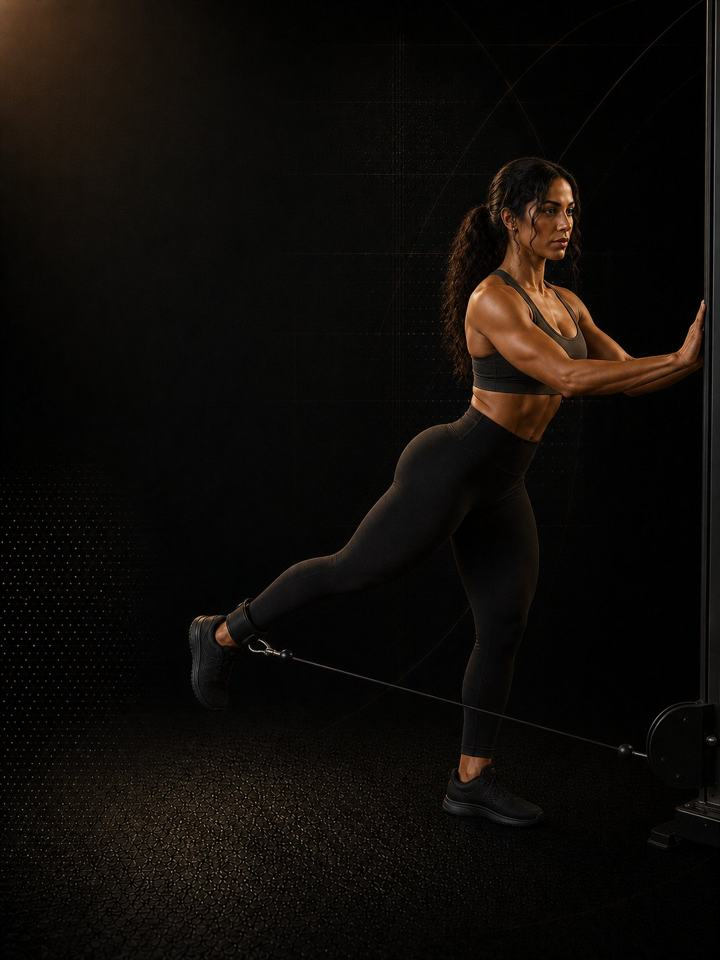

تركيز الأرداف · 3 أيام
برنامج الجسم الكامل في ثلاثة أيام، مع نقل الأرداف إلى مقدّمة الأسبوع.
- مناسب لـثلاثة أيام في الأسبوع، والأرداف هي الأولوية
- أيام التدريب3 أيام غير متتالية في النادي أسبوعيًا
- مدة الجلسة48–62 دقيقة
- المعداتنادٍ متكامل: بار ودمبلات وكيبل وأجهزة
- الصيغةملف PDF للهاتف، وكل تمرين مرتبط بفيديو توضيحي
لمن هذا البرنامج
ثلاثة أيام تمرين وأولوية واحدة واضحة. هذا هو هيكل الجسم الكامل بعد إعادة توزيع خاناته. دفع الورك يتصدّر جلستين من الثلاث، وتمارين فتح الورك المباشرة تدعمه في كلتيهما، وتمارين الساق الواحدة مختارة وموجَّهة للأرداف لا للعضلة الرباعية.
وكل جلسة ما زالت تتضمّن تمرين ضغط وتمرين سحب، فيستمر تمرين الجزء العلوي طوال الأسبوع، ولا يضمر بصمت بينما تحصل الأولوية على ما تحتاجه.
يناسب كل من لديه ثلاثة أيام للتمرين وأولويته في الأسابيع الاثني عشر القادمة حجم الأرداف وقوتها. لا يوجد شرط للمستوى، فالأحمال تتدرّج من التمرين الأول.
لا يناسبك إذا كانت لديك أربعة أيام بانتظام. برنامج تركيز الأرداف · 4 أيام يقدّم أكثر. لكن ثلاثة أيام تُنفَّذ كل أسبوع أفضل من أربعة تُنفَّذ في معظم الأسابيع، وهذه النسخة مبنية لذلك تحديدًا.
أسبوعك
ثلاثة أيام غير متتالية في النادي، تُنفَّذ بالترتيب. في كل أسبوع، تتمرّن العضلة الرباعية والأرداف ثلاث مرات، والصدر والظهر والأكتاف والعضلات الخلفية للفخذ مرتين، والذراعان والسمانة مرة واحدة.
| الأسبوع | الأحد | الاثنين | الثلاثاء | الأربعاء | الخميس | الجمعة | السبت |
|---|---|---|---|---|---|---|---|
| المعتاد | اليوم 1 الجسم كاملًا، دفع ورك ثقيل | راحة | اليوم 2 الجسم كاملًا | راحة | اليوم 3 الجسم كاملًا، دفع ورك خفيف | راحة | راحة |
| المزدحم (يومان) | اليوم 1 الجسم كاملًا، دفع ورك ثقيل | راحة | راحة | اليوم 2 الجسم كاملًا | راحة | راحة | راحة |
أي ثلاثة أيام تصلح، مع يوم راحة بينها كلما أمكن. وفي أسبوع من يومين، نفّذ اليوم 1 واليوم 2. تبقى الجلستان اللتان يقودهما الورك، دفع الورك ومفصلة الورك، وتبقى الأرداف والأرجل تتمرّن مرتين.
يوما دفع الورك، ولكل منهما مهمة. اليوم 1 هو اليوم الثقيل، وفيه يرتفع الحمل. واليوم 3 أخف، مع شدّ أطول في الأعلى. لا تدعه ينجرف صعودًا ليطابق اليوم 1.
كل جلسة تسير بالطريقة نفسها:
- الإحماء، 8–10 دقائق. الوركان والكتفان والكاحلان قبل أول مجموعة ثقيلة.
- التمرين المركّب الرئيسي، 15–20 دقيقة. أول رفعتين في اليوم. راحة كاملة، وأفضل أداء فني، وأثقل الأحمال.
- العمل الثانوي، 15–20 دقيقة. الضغط والسحب وتمارين الساق الواحدة براحة متوسطة.
- العزل، 10–12 دقيقة. فتح الورك والسمانة والذراعان والجذع. راحة قصيرة، وقرب من الفشل، وفي النهاية.
الترتيب مقصود. التمرين المركّب الأصعب يأتي أولًا وأنت في كامل نشاطك، لأن الوضعية والحمل يهمّان فيه أكثر من أي مكان آخر. وتمارين العزل تأتي أخيرًا لأنها الأقل تطلّبًا من الناحية الفنية والأسهل إنهاءً وأنت متعب.
كيف تتقدّم الأسابيع الـ12
ثلاث مراحل، مدة كل منها أربعة أسابيع. ترتفع المجموعات لكل عضلة خلال المرحلة 2. وتحتفظ المرحلة 3 بالمجموعات نفسها، بينما تقلّ التكرارات ويرتفع الجهد.
| الأسابيع 1–4 | الأسابيع 5–8 | الأسابيع 9–12 | |
|---|---|---|---|
| المرحلة | التوتر الميكانيكي | تراكم الحجم | تكثيف الحمل |
| الهدف | بناء الأداء الفني وتحمّل الأنسجة الضامّة بحمل متوسط | إضافة مجموعات أسبوعية لكل عضلة لتحفيز النمو | رفع الحمل وإنهاء المجموعات أقرب إلى الفشل |
| المجموعات الفعلية أسبوعيًا | 54 | 65 | 65 |
| متوسط الجهد | جهد 7.8/10 | جهد 8.0/10 | جهد 8.4/10 |
المرحلة في لمحة
المجموعات التدريبية أسبوعيًا حسب ما تدرّبه. الخط المتقطع هو مستوى الجهد.
هذا المقياس هو الجهد (RPE)، أي تقييم من 1 إلى 10 لمدى صعوبة المجموعة: «جهد 8/10» يعني أن توقف المجموعة ويتبقى في الخزان نحو تكرارين جيدين.
المجموعات الأسبوعية لكل عضلة
| العضلة | الأسابيع 1–4 | الأسابيع 5–8 | الأسابيع 9–12 |
|---|---|---|---|
| الأرداف | 21 | 24 | 24 |
| الصدر | 6 | 8 | 8 |
| الظهر | 6 | 8 | 8 |
| العضلة الرباعية | 9 | 10 | 10 |
| السمانة | 3 | 4 | 4 |
| العضلات الخلفية للفخذ | 6 | 8 | 8 |
| الأكتاف | 6 | 7 | 7 |
| الذراعان (عمل مباشر) | 3 | 3 | 3 |
أسابيع التخفيف: الأسبوعان 6 و12 أخف. تنفّذ نصف المجموعات بجهد أقل بـ1–2 درجة، وتحتفظ بالتمارين نفسها، وتعيد الاختبار وأنت مرتاح.
القواعد التي تجعله ينجح
- دفع الورك في اليوم 1 هو الرفعة التي تُقيَّم بها الكتلة التدريبية. ترتفع المجموعات أولًا، ثم الحمل. متغيّر واحد في كل مرة.
- أضف تكرارًا قبل أن تضيف وزنًا. عندما تصل كل مجموعة إلى أعلى النطاق بالجهد المذكور لجلستين متتاليتين، أضف 2.5 كغ في رفعات الجزء العلوي، أو 5 كغ في رفعات الجزء السفلي، أو درجة واحدة على الجهاز. ثم عُد إلى أسفل النطاق واصعد من جديد. تغيير واحد في كل مرة يخبرك بما نجح.
- الشدّ في الأعلى ليس اختياريًا. تكرار دفع الورك دون توقّف كامل في الأعلى تمرين مختلف وأسهل. إذا كان التوقّف يقصر، فقد سبقك الحمل.
- تمارين العزل تقترب من الفشل. جهاز فتح الورك وتمارين المشي هي مكان أصعب المجموعات، عند نحو تكرار واحد قبل الفشل (جهد 9/10). أما دفع الورك فيتوقّف عند الجهد المذكور، لأن الوضعية هي التي تقرّر سلامته.
- توقّف تقدّم الرفعة إشارة تعافٍ أولًا. جلستان دون تقدّم في الرفعة نفسها تعنيان عادةً مشكلة في النوم أو الطعام، لا في البرنامج. افحصهما قبل أن تغيّر الخطة.
لماذا تحتل المجموعات لكل عضلة المركز
المجموعات الأسبوعية لكل عضلة هي الرافعة التي تحرّك حجم العضلات. مجموعات أكثر تعني نموًا أكبر، مع تناقص في العائد، ونادرًا ما تتابع الدراسات أحدًا بعد نحو عشر مجموعات صعبة لكل عضلة أسبوعيًا. والاقتراب من الفشل مهم لحجم العضلات، لكنه ليس كذلك للقوة، إذ يؤدي الحمل الثقيل مع تكرارات متبقية المهمة نفسها. يتعامل البرنامج مع هذه النتائج على أنها هيكله، ومع اختيار التمارين على أنه تفاصيل.
المصطلحات
- الكتلة التدريبية: 12 أسبوعًا. هذا البرنامج. تطوّر الكتلة الواحدة مجموعة واحدة من الصفات إلى مستوى محدّد.
- المرحلة (الدورة المتوسطة): 4 أسابيع. تستهدف كل منها صفة واحدة. وأربعة أسابيع اختيار لا قاعدة، فالمدة تتبع الهدف.
- الأسبوع التدريبي (الدورة الصغرى): حيث يرتفع الجهد، وتُضاف المجموعات، ويقع أسبوع التخفيف.
- السنة التدريبية (الدورة الكبرى): أربع كتل بالترتيب (الأساس، والبناء، والمنافسة، والاستشفاء)، نحو 48 أسبوعًا.
كيف تقيس تقدّمك
يتضمّن ملف PDF اختبارات معيارية وجدولًا لتسجيل النتائج. تسجّل نقطة البداية، ثم تعيد الاختبار وأنت مرتاح في أسبوعي التخفيف، 6 و12.
شكل التقدّم الجيد
- الأسابيع 1–4: يرتفع حمل دفع الورك بسرعة في البداية. هذا تحسّن في الأداء الفني، فدعه يأتي.
- الأسابيع 5–8: ترتفع المجموعات، وتطول الجلسات، ويبدأ قياس الورك بالتحرّك قبل أن توافقه المرآة.
- الأسابيع 9–12: يتولّى الحمل القيادة.
تُقيَّم الكتلة التدريبية بثلاثة أرقام: محيط الورك ارتفع، وأثقل مجموعة في دفع الورك ارتفعت، ورقم دفع الساقين ثبت. هذا المزيج هو شكل التركيز الذي تحقّق فعلًا.
خارج النادي
التمرين هو الإشارة، والطعام والنوم يقرّران قدرة الجسم على الاستجابة لها. تُبنى العضلات من فائض طاقة صغير، ونحو 1.6–2.2 غ من البروتين لكل كيلوغرام من وزن الجسم يوميًا، و7–9 ساعات من النوم. إذا قصّرت في الأكل أو النوم، تحوّلت اثنا عشر أسبوعًا من التمرين إلى اثني عشر أسبوعًا من الإرهاق بنتيجة ضئيلة. هذا برنامج تدريب لا خطة تغذية. وللحصول على أهداف فردية، راجع أخصائي تغذية معتمدًا.
الأدلة العلمية
كل برنامج في المكتبة مبني على أبحاث منشورة، وقوة تلك الأبحاث مذكورة صراحةً لا ضمنًا. وحيث تكون الأدلة محدودة، تقول الصفحة ذلك.
| النتيجة | المصدر | ما لا تُظهره |
|---|---|---|
| يزداد نمو العضلات مع عدد المجموعات الأسبوعية لكل عضلة، في علاقة جرعة واستجابة متدرّجة. | Schoenfeld, Ogborn & Krieger, Journal of Sports Sciences 2017. Systematic review and meta-regression, 15 studies, 34 treatment groups, trained and untrained participants. PMID 27433992 | كل مجموعة أسبوعية إضافية تساوي نحو 0.37% من النمو الإضافي. التأثير متدرّج لا مفتوح بلا حد، ونادرًا ما تصل الدراسات إلى 10 مجموعات أو أكثر. |
| أي وصفة تدريب معقولة أفضل من عدم التدريب. الأحمال الأثقل تحتل المرتبة الأعلى للقوة، والمجموعات المتعددة تحتل المرتبة الأعلى لحجم العضلات. | Currier, McLeod, Banfield et al., British Journal of Sports Medicine 2023. Bayesian network meta-analysis, 178 strength and 119 hypertrophy studies, 5,097 and 3,364 participants, about 46% women. PMID 37414459 | كانت الفروق بين الوصفات صغيرة، وكلها نجحت. |
| تدريب القوة يخفض الإصابات الرياضية إلى أقل من ثلث معدلها في المجموعة الضابطة. أما الإطالة فلا تخفضها. | Lauersen, Bertelsen & Andersen, British Journal of Sports Medicine 2014. Meta-analysis of 25 randomised controlled trials, 26,610 participants, 3,464 injuries. PMID 24100287 | نسبة الخطر 0.32 لتدريب القوة و0.96 للإطالة. تفاوتت التجارب كثيرًا، ولم تكن الجرعة موحّدة. |
ماذا بعد
بعد 12 أسبوعًا:
- أربعة أيام في الأسبوع: تركيز الأرداف · 4 أيام
- العودة إلى تقسيم متوازن: الجسم الكامل
- منطقة واحدة تحتاج إلى عمل: السلسلة التصحيحية
قبل الشراء: احصل على موافقة طبية أولًا إذا
- كان لديك ألم في الصدر، أو ضيق تنفس غير معتاد، أو خفقان، أو دوخة أثناء المجهود.
- كان لديك ضغط دم مرتفع غير منضبط، أو مرض قلبي معروف، أو خضعت لعملية جراحية مؤخرًا.
- كنتِ حاملًا أو بعد الولادة بفترة قصيرة. احصلي على موافقة وبرنامج مخصص أولًا.
- كان لديك ألم حاد في مفصل واحد لا يهدأ. ابدأ ببرنامج أكسس التصحيحي المناسب.
هذا البرنامج إرشاد عام للياقة البدنية، ولا يغني عن التقييم الطبي.